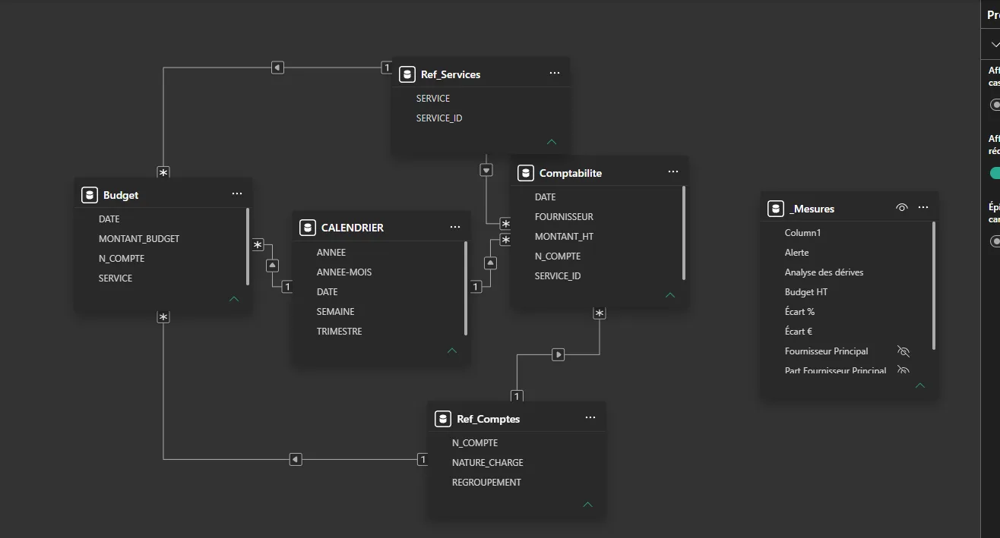
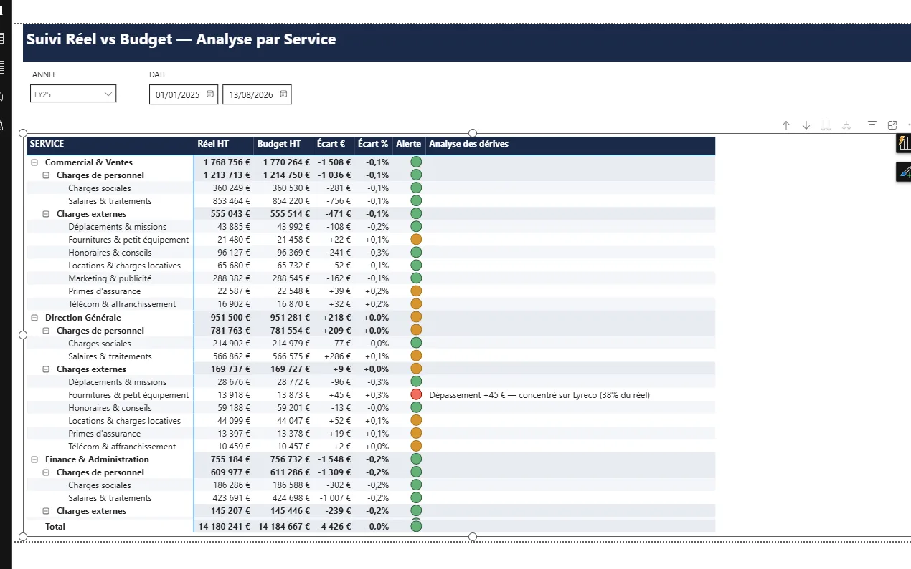

L'idée du projet
Jusqu'où une IA agentique peut-elle construire un vrai rapport Power BI presque sans moi : monter le modèle, la mise en page, le thème, et vérifier elle-même le rendu dans Power BI Desktop ?
J'ai confié la tâche à Claude (via Claude Code) en restant superviseur : je donne le brief, je débloque les actions manuelles, l'agent fait le reste. J'ai procédé en deux étapes : d'abord un dashboard de test pour prendre en main l'outillage, ensuite un vrai projet qui reproduit un exercice de formation.
Un dashboard de test
Jeu de données fictif (144 transactions). Le vrai objectif n'était pas le dashboard : c'était de faire écrire à Claude un guide de ses propres erreurs, pour cadrer la suite.
Suivi Réel vs Budget
Reproduire une matrice de pilotage vue en formation : Réel vs Budget par service, jusqu'à la nature de charge, avec alerte colorée et un commentaire automatique des dépassements. Toutes les données sont générées en Python.
La stack
Le principe : ne jamais deviner le format des fichiers Power BI. Je m'appuie sur l'outillage officiel Microsoft (les skills skills-for-fabric) pour cadrer l'agent, puis je branche le MCP adapté à la couche visée.
| Outil | Rôle |
|---|---|
| Skills officielles Microsoft · skills-for-fabric (MIT) | |
| powerbi-report-authoring | Écrire/éditer le rapport PBIR (pages, visuels, thème) + boucle valider → recharger → capturer. Skill centrale du projet. |
| powerbi-report-design | Thème, style visuel, layout, critique de rendu. |
| powerbi-report-planning | Transformer un besoin en spécification de rapport. |
| powerbi-report-management | Gérer les rapports côté Fabric (workspace). |
| semantic-model-authoring | Construire le modèle : tables, relations, mesures DAX, TMDL. |
| semantic-model-consumption | Interroger un modèle existant (requêtes DAX). |
| CLI officielles Microsoft | |
| powerbi-report-authoring-cli | Valider le PBIR, connaître les propriétés exactes des visuels. |
| powerbi-desktop-bridge-cli | Piloter Power BI Desktop : ouvrir, recharger, capturer le rendu réel. |
| MCP · serveurs d'outils actionnables par l'agent | |
| powerbi-modeling-mcp officiel · Microsoft | Modèle sémantique (tables, relations, mesures DAX). Ne touche pas au rapport. |
| powerbi-report-builder communautaire | ~30 outils pbir_* pour construire le rapport, la couche que le MCP officiel ne couvre pas. |
| Reste de la stack | |
| Power BI Desktop | Installé via winget, piloté par le Desktop Bridge pour vérifier le rendu réel. |
| Python | pandas / openpyxl pour générer les jeux de données fictifs. |
| Formats | PBIP (dossier versionnable), PBIR, TMDL, DAX, Power Query M. |
Le vrai projet : Suivi Réel vs Budget
Aucune donnée réelle : tout est généré par un script Python. 9 services, 13 natures de charge, environ 3 800 écritures sur 17 mois. Sur certains mois, un fournisseur est volontairement mis en avant pour déclencher la colonne de commentaire.
Le modèle est un flocon : deux tables de faits (Comptabilite au jour, Budget au mois) partagent trois dimensions. Le calendrier n'est pas importé mais calculé en DAX (CALENDARAUTO()).

La partie la plus intéressante : une mesure DAX qui ne s'affiche qu'au niveau le plus fin, et seulement au-delà d'un certain seuil de dépassement, en indiquant le fournisseur responsable.
Analyse des dérives = VAR EstAuNiveauNature = ISINSCOPE(Ref_Comptes[NATURE_CHARGE]) VAR Ecart = [Écart %] RETURN IF( EstAuNiveauNature && NOT ISBLANK(Ecart) && Ecart > 0.002, "Dépassement " & FORMAT([Écart €], "+#,##0;-#,##0") & " €, concentré sur " & [Fournisseur Principal] & " (" & FORMAT([Part Fournisseur Principal], "0%") & " du réel)" )

Le point qui a vraiment coûté du temps : le thème
Les 4 cartes KPI restaient vides : le cadre s'affichait, mais ni chiffre ni libellé, et aucune erreur de validation pour me mettre sur la piste. En cause : le fichier theme.json contenait un sélecteur "$id": "default", valide dans un fichier de visuel mais pas dans un fichier de thème. Power BI ignore la clé sans rien signaler, ce qui casse l'affichage du texte, et le validateur officiel ne le détecte pas.
La leçon (écrite dans le guide) : jamais de sélecteur dans un fichier de thème, et pour un premier jet, mieux vaut partir du thème officiel « Copilot » que d'en fabriquer un à la main.
Ce que j'en retiens
- Une IA agentique peut produire un vrai livrable Power BI et vérifier son propre rendu : recharger Desktop, capturer, corriger. Il reste une chose qu'elle ne décide pas à ma place : est-ce vraiment conforme ?
- Le plus gros risque n'est pas le code, mais les différences subtiles de format (thème vs visuel, M vs DAX) qu'aucun validateur ne signale.
- Faire écrire à l'agent un guide de ses propres erreurs est ce qui a le plus aidé : la session suivante démarrait déjà en connaissant les pièges.